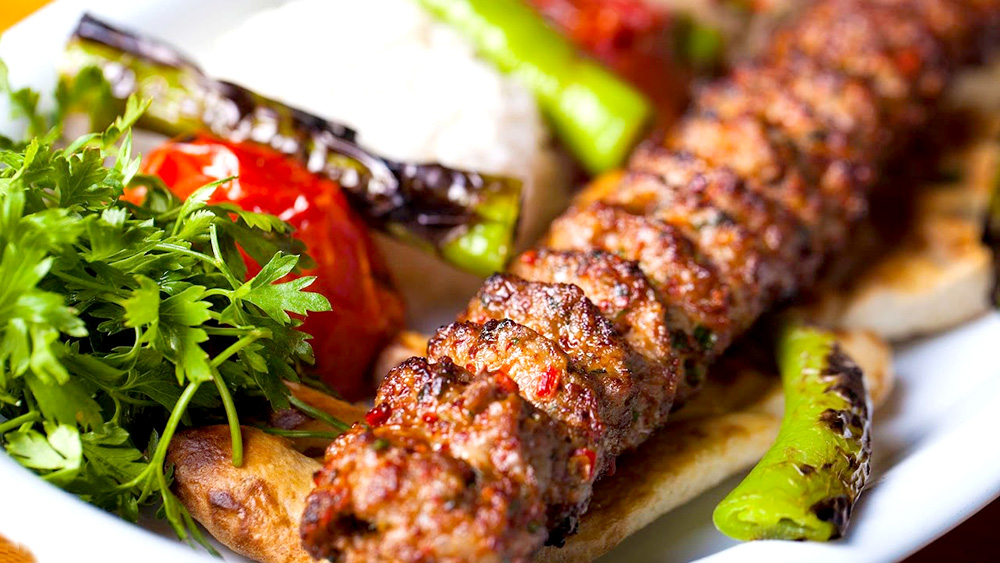

Home
Adana Kebap

Description
Adana kebab is one of Turkey’s most famous and flavorful dishes, originating from the southern city of Adana. It’s made from hand-minced lamb, seasoned simply with salt and red pepper flakes, then carefully pressed onto long metal skewers and grilled over open charcoal flames. The result is a smoky, juicy kebab with a perfect balance of spice and tenderness that reflects the bold culinary traditions of Turkey’s Mediterranean region.
Traditionally, Adana kebab is served with flatbread (lavash), grilled vegetables like tomatoes and green peppers, and fresh parsley or onion salad on the side. Many locals enjoy it with ayran, a cold yogurt drink that complements the spiciness of the meat. Beyond being a meal, Adana kebab represents a piece of Turkish culture — a symbol of craftsmanship, hospitality, and the joy of gathering around shared food.
Ingredients
- 1.1 lb lamb meat (preferably from the leg or shoulder, finely minced by hand)
- 3.5 oz lamb tail fat (optional but traditional for extra flavor and juiciness)
- 1 tsp red pepper flakes (pul biber, ideally Turkish style)
- ½ tsp ground cumin (optional)
- 1 tsp salt
- 1 small red bell pepper, finely chopped (optional, adds color and sweetness)
- 1–2 garlic cloves, finely minced (optional, not always used in traditional recipes)
- Flat metal skewers (wide Adana-style skewers, for even grilling)
Steps
- Prepare the meat: Finely mince the lamb meat and lamb tail fat together with a sharp knife or cleaver. (Avoid using a food processor if possible — hand-mincing gives the kebab its authentic texture.)
- Mix the seasoning: Place the minced meat in a large bowl. Add salt, red pepper flakes, and, if using, ground cumin, chopped red bell pepper, and minced garlic. Knead the mixture for about 5–7 minutes with your hands until it becomes sticky and well combined. This helps the meat hold together on the skewers.
- Chill the mixture: Cover the bowl and let the meat rest in the refrigerator for about 30–60 minutes. Chilling helps firm up the texture and makes it easier to shape.
- Shape the kebabs: Wet your hands with cold water. Take a handful of the meat mixture (about 5–6 oz) and press it evenly onto a flat metal skewer. The kebab should be about 1 inch wide and slightly flattened.
- Grill the kebabs: Preheat your grill or charcoal barbecue. Cook the kebabs over medium-high heat, turning occasionally, until nicely browned and cooked through — about 8–10 minutes total. The meat should stay juicy inside and slightly charred on the edges.
- Serve: Slide the kebabs off the skewers onto warm lavash or pita bread. Serve immediately with grilled tomatoes and peppers, onion-parsley salad, and a glass of cold ayran (yogurt drink).